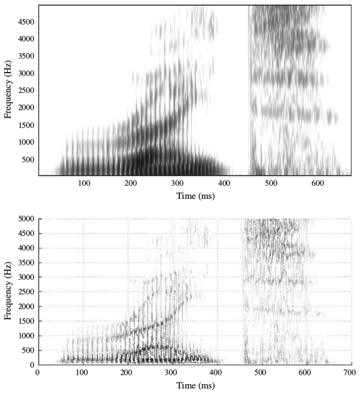

1 Introduction to Acoustic Phonetics
1.1 Before we start
If you missed the class, please see the recording from the previous year.
1.2 Phonetics?..

Phonetics is generally assumed to be a subfield that deals with articulatory, acoustic and perceptional aspects of phonological units. Phonology and phonetics together are supposed to describe organization of sounds in languages.
This course is about acoustic phonetics.
1.3 Simple Harmonic Motion
Periodic Motion is any type of motion that repeats itself after successuve equal time intervals.
Simple Harmonic Motion is specific type of periodic motion that arises from
- existence of some equilibrium position for a described object;
- linear restoring force that tending to pull the described object back to its equilibrium position.
There are several parameters of wave:
- Amplitude (A) is the maximum displacement of the equilibrium position (quick note: this value is always positive).
- Period (T) is the duration of time of one cycle in a repeating event. Measured in seconds.
- Frequency (f) is the number of period (cycles) per second. Measured in Hz.
\[ f = \frac{1}{T} \] \[ T = \frac{1}{f} \]
We can correlate the physical properties of sound waves with our perception:
- We perceive changes in frequency as pitch;
- We perceive changes in amplitude as loudness.
One period of SHM can be devided into 360° of phase φ.

So for the case of two SHM they can be out of phase:

… or one way can be 90° ahead:
So after all we have everything important for the wave definition:
\[ s(t) = A \times \cos(2\pi ft + \phi) \]
- A — amplitude;
- f — is the fundamental frequency;
- φ — phase;
- t — time.
1.4 Addition of waves
If we add some waves, we will get the new wave:
- Beats — beats is a phenomenon of the change in amplitude of the sum of two waves with slightly different frequencies. Here is an example from Wikipedia.
1.5 Harmonics
1.6 Fourier Transform
Fourier Transform allows to extract components of the complex wave.
| smoothie | complex wave |
|---|---|
| ↓ | ↓ |
| 1 banana, cut in chunks | 300 Hz |
| 1 cup grapes | 1000 Hz |
| vanilla yogurt | |
| 1/2 apple, cored and chopped | |
| 1.5 cup fresh spinach leaves |
Spectrograms are differ in window length:

Syllable [ka]

Conventional spectrogram and Zhao-Atlas-Marks distribution of the English word had, computed using a Kaiser tapering function (Fulop 2011: 119):

Conventional and reassigned spectrograms of the English word right (Fulop 2011: 42):

1.7 Source-Filter Model of Speech Production
The output energy (at the mouth) for a given frequency is equal to the amplitude the source harmonic, multiplied by the magnitude of the filter function for that the frequency.

1.8 Summary
- sounds are waves (with amplitude, frequency and phase)
- simple waves can be combined to the complex one
- Fourier transform allows to extract components of the complex wave
- It is not only Fourier transform that allows to extract components of the complex wave
- Source-Filter Model: vocal tract is a resonator that filters some frequencies of the wave produced by vocal folds vibration.
Fletcher, N. 2007. “Animal Bioacoustics.” In Springer Handbook of Acoustics, edited by Thomas D. Rossing, 785–804. New York: Springer.
Fulop, S. A. 2011. Speech Spectrum Analysis. Springer Science & Business Media.